Circuits#
Introduction#
The Circuit class represents a circuit of arbitrary topology, consisting of an arbitrary number of N-ports Networks connected together. Like in an electronic circuit simulator, the circuit must have one (or more) Port connected to the circuit. The Circuit object allows one retrieving the M-ports Network (and thus its network parameters: \(S\), \(Z\), etc.), where M is the number of ports defined. Moreover, the Circuit
object also allows calculating the scattering matrix \(S\) of the entire circuit, that is the “internal” scattering matrices for the various intersections in the circuit. The calculation algorithm is based on ref [1].
The figure below illustrates a network with 2 ports, Network elements \(N_i\) and intersections:
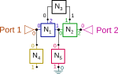
one must must define the connection list (“netlist”) of the circuit. This connection list is defined as a List of List of interconnected Tuples (network, port_number):
connexions = [
[(network1, network1_port_nb), (network2, network2_port_nb), (network2, network2_port_nb), ...],
...
]
For example, the connection list to construct the above circuit could be:
connexions = [
[(port1, 0), (network1, 0), (network4, 0)],
[(network1, 1), (network2, 0), (network5, 0)],
[(network1, 2), (network3, 0)],
[(network2, 1), (network3, 1)],
[(network2, 2), (port2, 0)],
[(network5, 1), (ground1, 0)],
[(network5, 2), (open1, 0)]
]
where we have assumed that port1, port2, ground1, open1 and all the network1 to network5 are scikit-rf Networks objects with same Frequency. Networks can have different (real) characteristic impedances: mismatch are taken into account. Convenience methods are provided to create ports and grounded connexions:
Warnings
Circuit requires distinct Network names for each Network. So, in case you would like to use multiple times the same Network, you have to duplicate this Network (for example using the .copy() method) and to specify a distinct .name property for each copy, like:
# Assuming network1 is the Network you would like to duplicate:
network2 = network1.copy()
network1.name = 'My first Network'
network2.name = 'My second network'
In addition, a set (network, port_number) should appear only once in the connection list. In case you would like to connect multiple networks to a single ones (like grounding multiple networks), there is two solutions:
connecting the N networks to a single
Groundobject once like in:
# in the connection list:
...
[(network1,1),(network2,1),(network3,1),(gnd,0)]
...
Or create as many distinct
Groundobjects (also with uniquenameproperties as mentioned above) as necessary.
# in the connection list:
...
[(network1,1), (gnd1,0)],
[(network2,1), (gnd2,0)],
[(network3,1), (gnd3,0)],
...
Once the connection list is defined, the Circuit with:
resulting_circuit = rf.circuit.Circuit(connexions)
resulting_circuit is a Circuit object.
The resulting 2-ports Network is obtained with the Circuit.network parameter:
resulting_network = resulting_circuit.network
Note that it is also possible to create manually a circuit of multiple Network objects using the connecting methods of scikit-rf. Although the Circuit approach to build a multiple Network may appear to be more verbose than the ‘classic’ way for building a circuit, as the circuit complexity increases, in particular when components are connected in parallel, the Circuit approach is interesting as it increases the readability of the
code. Moreover, Circuit circuit topology can be plotted using its plot_graph method, which is useful to rapidly control if the circuit is built as expected.
Examples#
Loaded transmission line#
Assume that a \(50\Omega\) lossless transmission line is loaded with a \(Z_L=75\Omega\) impedance.
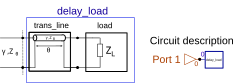
If the transmission line electric length is \(\theta=0\), then one would thus expect the reflection coefficient to be:
[1]:
import skrf as rf
from skrf.circuit import Circuit
rf.stylely()
[2]:
Z_0 = 50
Z_L = 75
theta = 0
# the necessary Frequency description
freq = rf.Frequency(start=1, stop=2, unit='GHz', npoints=3)
# The combination of a transmission line + a load can be created
# using the convenience delay_load method
# important: all the Network must have the parameter "name" defined
tline_media = rf.media.DefinedGammaZ0(freq, z0=Z_0)
delay_load = tline_media.delay_load(rf.tlineFunctions.zl_2_Gamma0(Z_0, Z_L), theta, unit='deg', name='delay_load')
# the input port of the circuit is defined with the Circuit.Port method
port1 = Circuit.Port(freq, 'port1', z0=Z_0)
# connection list
cnx = [
[(port1, 0), (delay_load, 0)]
]
# building the circuit
cir = Circuit(cnx)
# getting the resulting Network from the 'network' parameter:
ntw = cir.network
print(ntw)
1-Port Network: '', 1.0-2.0 GHz, 3 pts, z0=[50.+0.j]
[3]:
# as expected the reflection coefficient is:
print(ntw.s[0])
[[0.2+0.j]]
It is also possible to build the above circuit using a series impedance Network, then shorted:
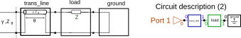
To do so, one would need to use the Ground() method to generate the required Network object.
[4]:
port1 = Circuit.Port(freq, 'port1', z0=Z_0)
# piece of transmission line and series impedance
trans_line = tline_media.line(theta, unit='deg', name='trans_line')
load = tline_media.resistor(Z_L, name='delay_load')
# ground network (short)
ground = Circuit.Ground(freq, name='ground')
# connection list
cnx = [
[(port1, 0), (trans_line, 0)],
[(trans_line, 1), (load, 0)],
[(load, 1), (ground, 0)]
]
# building the circuit
cir = Circuit(cnx)
# the result if the same :
print(cir.network.s[0])
[[0.2+0.j]]
LC Filter#
Here we model a low-pass LC filter, with example values taken from rf-tools.com :
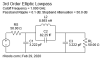
[5]:
freq = rf.Frequency(start=0.1, stop=10, unit='GHz', npoints=1001)
tl_media = rf.media.DefinedGammaZ0(freq, z0=50, gamma=1j*freq.w/rf.constants.c)
C1 = tl_media.capacitor(3.222e-12, name='C1')
C2 = tl_media.capacitor(82.25e-15, name='C2')
C3 = tl_media.capacitor(3.222e-12, name='C3')
L2 = tl_media.inductor(8.893e-9, name='L2')
RL = tl_media.resistor(50, name='RL')
gnd = Circuit.Ground(freq, name='gnd')
port1 = Circuit.Port(freq, name='port1', z0=50)
port2 = Circuit.Port(freq, name='port2', z0=50)
cnx = [
[(port1, 0), (C1, 0), (L2, 0), (C2, 0)],
[(L2, 1), (C2, 1), (C3, 0), (port2, 0)],
[(gnd, 0), (C1, 1), (C3, 1)],
]
cir = Circuit(cnx)
ntw = cir.network
[6]:
ntw.plot_s_db(m=0, n=0, lw=2, logx=True)
ntw.plot_s_db(m=1, n=0, lw=2, logx=True)
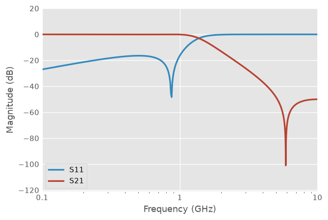
When building a Circuit made of few networks, it can be useful to represent the connection graphically, in order to check for possible errors. This is possible using the Circuit.plot_graph() method. Ports are indicated by triangles, Network with squares and interconnections with circles. It is possible to display the network names as well as their associated ports (and characteristic impedances):
[7]:
cir.plot_graph(network_labels=True, network_fontsize=15,
port_labels=True, port_fontsize=15,
edge_labels=True, edge_fontsize=10)
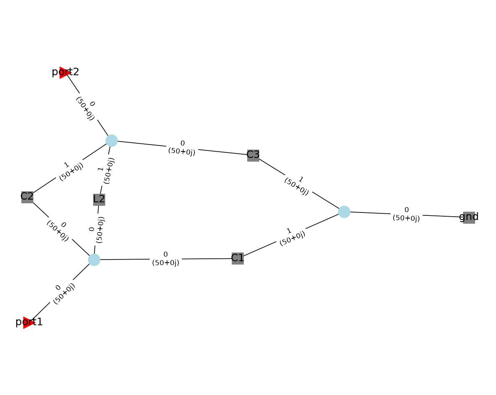
Circuit Reduction#
Here we model a slightly more complex band-pass LC filter to demonstrate circuit reduction, with example values taken from markimicrowave.com :
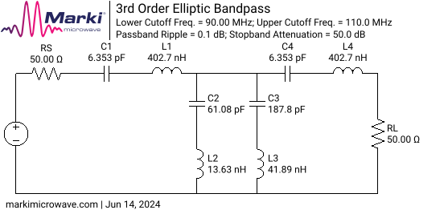
[8]:
freq = rf.Frequency(50, 200, 301, 'mhz')
tl_media = rf.media.DefinedGammaZ0(frequency=freq, z0=50)
gnd = Circuit.Ground(frequency=freq,name='ground')
C1 = tl_media.capacitor(6.353e-12, name='C1')
L1 = tl_media.inductor(402.7e-9, name='L1')
C2 = tl_media.capacitor(61.08e-12, name='C2')
L2 = tl_media.inductor(13.63e-9, name='L2')
C3 = tl_media.capacitor(187.8e-12, name='C3')
L3 = tl_media.inductor(41.89e-9, name='L3')
C4 = tl_media.capacitor(6.353e-12, name='C4')
L4 = tl_media.inductor(402.27e-9, name='L4')
Port1 = Circuit.Port(frequency=freq, name='PortIn')
Port2 = Circuit.Port(frequency=freq, name='PortOut')
cnx = [
[(Port1, 0), (C1, 0)],
[(C1, 1), (L1, 0)],
[(L1, 1), (C2, 0), (C3, 0), (C4, 0)],
[(C2, 1), (L2, 0)],
[(C3, 1), (L3, 0)],
[(L2, 1), (L3, 1), (gnd, 0)],
[(C4, 1), (L4, 0)],
[(L4, 1), (Port2, 0)]
]
cir = Circuit(cnx)
ntw = cir.network
[9]:
ntw.plot_s_db(m=0, n=0, lw=2)
ntw.plot_s_db(m=1, n=0, lw=2)
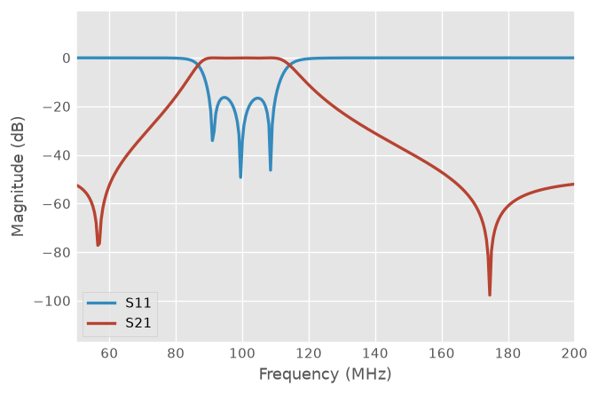
As in the previous example, we can use Circuit.plot_graph() method to represent the connection graphically.
[10]:
cir.plot_graph(network_labels=True, network_fontsize=15,
port_labels=True, port_fontsize=15,
edge_labels=True, edge_fontsize=10)
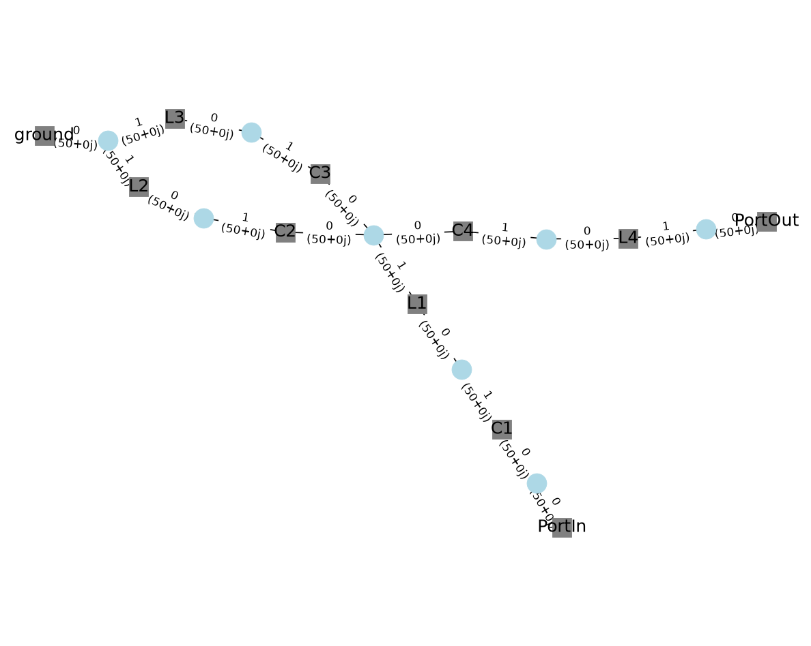
When focusing solely on Ports and disregarding internal Networks, we could utilize rf.reduce_circuit() to streamline the circuit. This method will automatically series-connect adjacent networks through a rf.connect() approach, retaining only Ports and connections containing more than 2 Networks for circuit analysis.
[11]:
reduced_cnx = rf.circuit.reduce_circuit(cnx)
reduced_cir = Circuit(reduced_cnx)
reduced_cir.plot_graph(network_labels=True, network_fontsize=15,
port_labels=True, port_fontsize=15,
edge_labels=True, edge_fontsize=10)
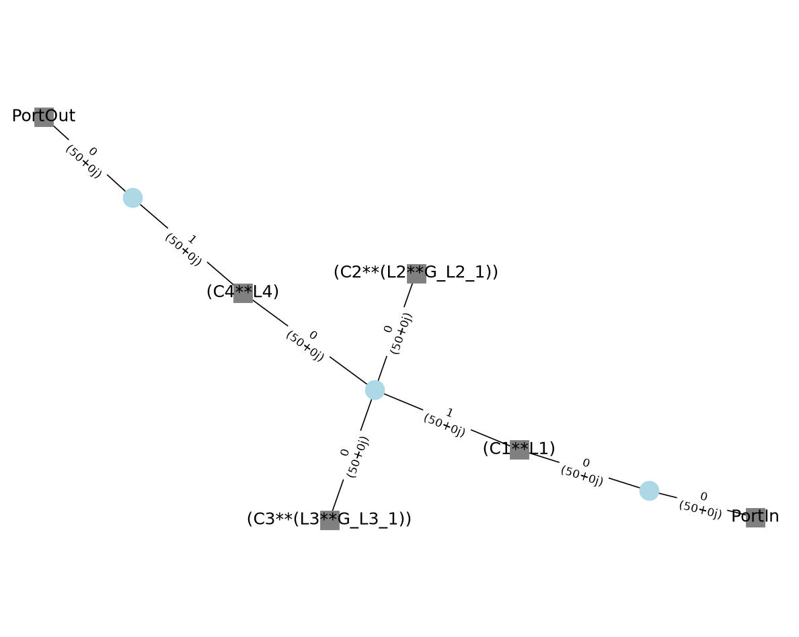
Additionally, optional parameters can influence the behavior of circuit reduction. For instance, split_ground=True indicates splitting the shared Ground in the circuit:
[12]:
fully_reduced_cnx = rf.circuit.reduce_circuit(cnx, split_ground=True)
fully_reduced_cir = Circuit(fully_reduced_cnx)
fully_reduced_cir.plot_graph(network_labels=True, network_fontsize=15,
port_labels=True, port_fontsize=15,
edge_labels=True, edge_fontsize=10)
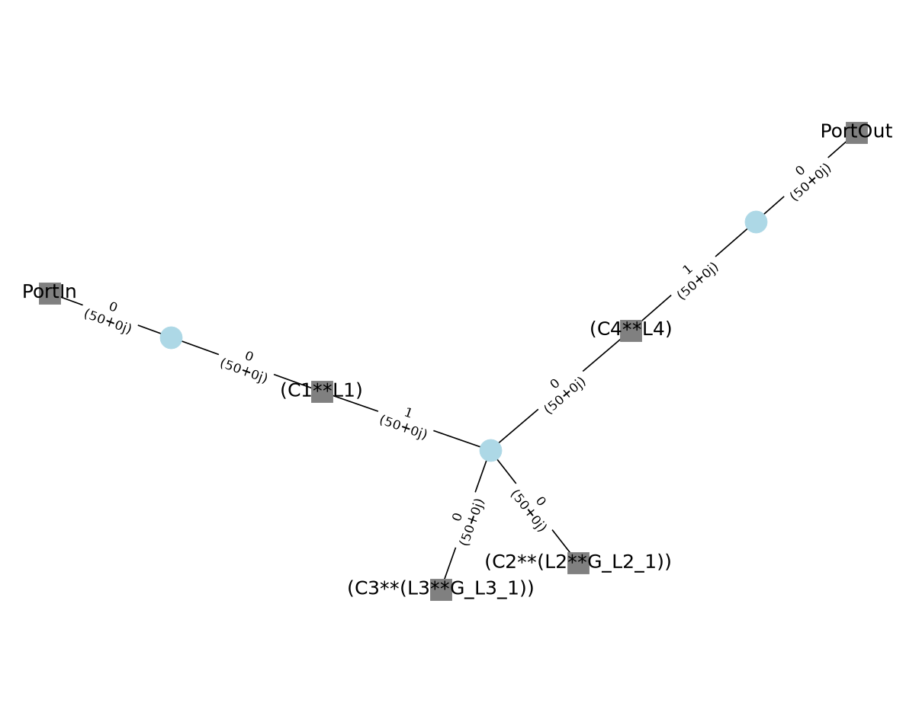
Finally, the Circuit constructor offers an option for automatic circuit simplification. Setting auto_reduce=True enables the creation of a significantly streamlined Circuit object, enhancing efficiency for Port’s S-parameter calculations.
[13]:
from timeit import timeit
import numpy as np
fully_reduced_ntw = fully_reduced_cir.network
auto_reduced_cir = Circuit(cnx, auto_reduce=True)
auto_reduced_ntw = auto_reduced_cir.network
n_times = 10
print("Unreduced Circuit calculate Network in "
f"{timeit(lambda: cir.network, number=n_times)/n_times:.4f}s")
print("Auto-reduced Circuit calculate Network in "
f"{timeit(lambda: auto_reduced_cir.network, number=n_times)/n_times:.4f}s")
print("Manually reduced circuit has the same s-parameters as the original circuit: "
f"{np.allclose(ntw.s, fully_reduced_ntw.s)}")
print("Auto reduced circuit has the same s-parameters as the original circuit: "
f"{np.allclose(ntw.s, auto_reduced_ntw.s)}")
Unreduced Circuit calculate Network in 0.0035s
Auto-reduced Circuit calculate Network in 0.0012s
Manually reduced circuit has the same s-parameters as the original circuit: True
Auto reduced circuit has the same s-parameters as the original circuit: True
References#
[1] Hallbjörner, P., 2003. Method for calculating the scattering matrix of arbitrary microwave networks giving both internal and external scattering. Microw. Opt. Technol. Lett. 38, 99–102. https://doi.org/10/d27t7m
[ ]: